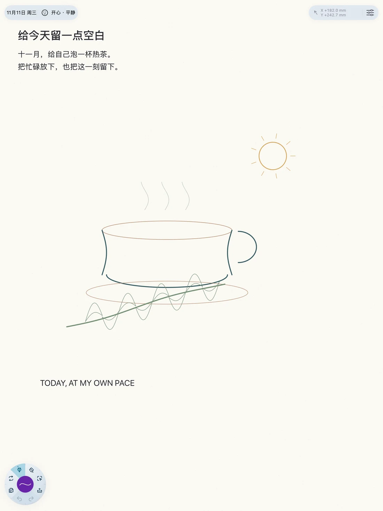

YEYA NOTES
Keep a little of today.
Write a few lines, sketch a moment, add a photo. A diary you can return to.
From recording to remembering.
Text, handwriting and photos share a page. Organize entries by date and notebook, then find them again through previews of the pages you made.
Tools within reach.
On iPad, the circular tool opens brushes, colors and editing actions as you need them. Eight brushes, lightweight layers and a photo reference help with everyday illustration.
Saved on your device.
Optional local encryption and complete password-protected backups help you manage your diary. iCloud sync is not enabled in this version. Export a backup before changing devices.


Platforms, prices and availability are determined by the final App Store listing.